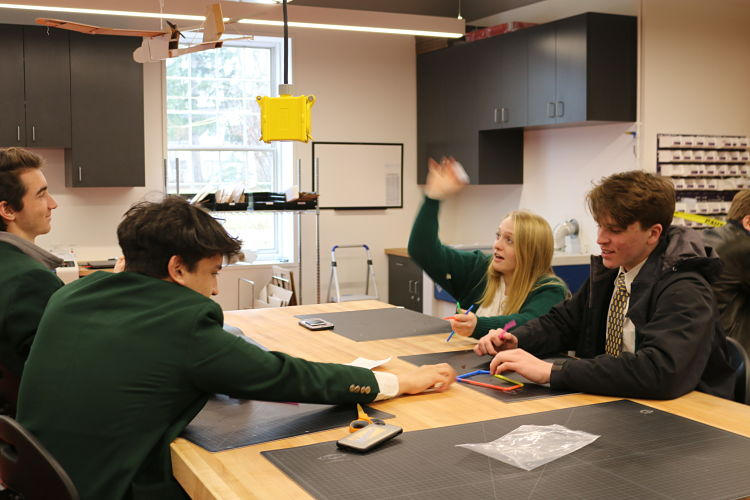

My group took on the first challenge which entailed building the tallest possible tower of newspaper and 18 inches of tape while withstanding the power of a fan. My group utilized two sheets of newspaper to create an aero dynamic base in the shape of a triangle. The tower was secured to the corner nearest the fan
Personally, with some help from Nate, I created the top part of the tower, and tried to maximize the extension while using as little tape as possible without hindering the structural integrity of the tower. I knew that a cone/ cylinder shape would facilitate the group's goals.

The second challenge was more challenging. With only a few plastic straws and 18 inches of tape, each group had to create a structure that would catch a golf ball drop from above. More than halfway throuhg the challenge, my partners and I had not made much progress with our design, and I proposed a basket weave to support the golf ball. My thought process was that the basket weave would allow for some give to prevent the golf ball from bouncing out, and would also be strong enough to keep the ball from dropping right through the structure onto the floor. With little time to execute this idea, we didn't have much time secure the base, and the basket swung to the side like a hammock the second it made contact with the golf ball. Because the base was not propeerly secured, it lacked the ability to balance, spitting the golf ball out the side of the structure.
